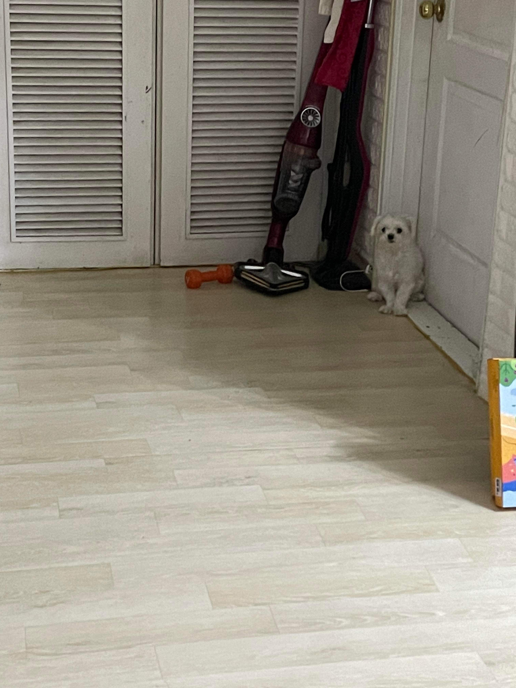

자두는 .. 생일을 모른다 .. 나이 ..... 도 잘 모른다 .... 자두야 미안.....
자두는 말티즈이다. 몰티즈는 몰타 섬이 고향으로 알려진 소형견으로 앙증맞은 외모와 애교 넘치는 성격, 흰 털로 많은 사랑을 받는 반려견이다. 한국에서 가장 많은 사람들이 키우는 반려견으로 ‘국민 강아지’로 통하기도 한다. 흰색 털이 변색될 수 있으며 특히 눈가의 털색이 갈색으로 변색될 수 있는데 이는 눈물자국 때문이다. 눈물자국을 방치하면 세균이 증식해 피부병의 원인이 될 수 있다. 털을 자주 관리해주지 않으면 엉키거나 끝이 갈라지는 등의 문제가 생길 수도 있다.
활발한 성격 때문에 산책을 좋아한다. 다정다감한 성격 때문에 배변 교육 등 반려견 교육도 잘 받을 수 있다. 유전적으로 관절이 좋지 않아 슬개골 탈구가 자주 일어나며 눈물이 많이 흐르는 유루증 또한 잘 발생한다. 이첨판 폐쇄부전이라는 심장질환도 잘 걸리므로 자주 기침하는 증상이 발생하면 이 질병을 의심하고 병원을 찾아야 한다.
자두는 조그맣다. 2kg의 몸무게를 가지고 있다. 자두네 집에 놀러가면 자두가 졸졸 따라다니는데 발에 치일까봐 겁난다. 자두를 들면 너무 가벼워서 날아갈 것 같다. 두부를 들어올릴 때랑 차이가 매우 크다. 귀여워!!!!